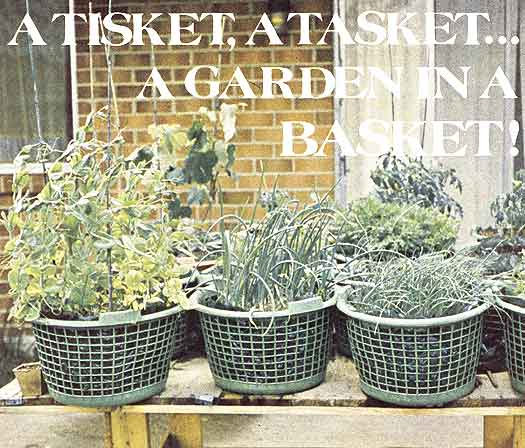

Last spring, my wife and, I were faced with a problem that I suppose most folks run into sooner or later: We wanted a garden-in fact, we desperately needed a garden?but we didn't have any place to put one.
At the time, I had just left the Army and was out of work, so the idea of spending my hard-to-come-by cash on overpriced supermarket produce wasn't all that attractive. Unfortunately, our landlord didn't like the notion of us digging a vegetable patch in the backyard any better . . . and even if he had, we would've hesitated.
You see, we hoped to move to a small farm sometime before the end of the growing season, and we didn't want to have to leave a still thriving garden behind. Besides, we'd already learned from experience that "we'd have to get up early in the morning" to protect a vegetable patch from our two mixed terriers. The "devilish duo" would get under or over any kind of fence we put in their way, and proceed to mangle whatever plants they could find.
So. We used a little ingenuity and came up with a different kind of garden that was portable and pet-proof and productive all at once. In short, we grew piles of tall-topped carrots, juicy tomatoes, and a bevy of other fresh fruits and vegetables . . . in baskets!
Now, I know that some dyed-in-the-wool traditionalists will turn their noses up at any garden not rooted deep in Mother Earth herself. But if your problems are similar to what ours were, or if you live in a small city apartment, or if you can't do all the stooping and bending that ground-level planting and weeding requires . . . well, then a basket garden can be a pretty good way to go!
To start one, all you'll need is several containers large enough to hold a sufficient amount of soil to support living vegetation. In our case, we couldn't spend a fortune on oversized ceramic pots, and we didn't have any good "recyclables" (such as paint buckets or gallon-size plastic milk jugs). So we scouted a local discount store, where we discovered that ordinary clothes baskets were just fine for our purposes (and inexpensive to boot). The bushel size cost only 57 cents apiece, and the half-bushel just 37 cents . . . so we brought home three large and seventeen small baskets for a total price of just $8.00!
Next, we lined the containers with plain old "Hefty type" trash bags, and then filled the bottom of each with two inches of coarse gravel for drainage. On top of that we placed a layer of newspaper to keep the soil from washing down into the stones.
Then we added the growing' medium itself. Gardening books call for a 1: 1: 1 ratio of peat moss, loam, and sand . . . and advise that rotted manure, leaves, grass clippings, and other well-shredded vegetation can also be mixed in. We, however, simply used three parts slightly, sandy (and rocky) soil from an empty field, combined with one part grass clippings judging from the way our plants thrived, I'd say just about any reasonably rich blend of natural materials that's light and loose enough to provide good aeration will work OK.
Finally, we poked a few small holes in the base of the lined containers to allow extra drainage, and placed stakes in the baskets in which we intended to grow tomatoes and peas.
A friend of ours had access to a number of wooden pallets that some local factories wanted to dispose of so he gave us two of the skids, from which we constructed a platform that kept our "garden" well above the reach of canine claws, but at just the right height for easy weeding. One of the discards made an "instant tabletop", and a few minutes' work with a crowbar and hammer gave us enough usable lumber from the other to build supporting legs and braces. (Incidentally, homesteaders might take note of the fact that throwaway pallets are a good source of free wood for rough construction. They can be used either disassembled or as whole "prefab" sections in any number of projects.)
The final step in establishing our vegetable patch, of course, was the actual planting . . . but before jumping in "seeds first", we referred to three books which were especially helpful: [1] Raise Vegetables Without a Garden by Doc and Katy Abraham (Countryside Books, 1974, $2.95); [2] All About Vegetables edited by Walter Doty (regionally oriented editions, published by Chevron Chemical Company, 1973, $2.95); and [3] The Mother Earth News (restricted) Almanac (THE Mother Earth News (restricted) , Inc., 1973, $1.95).
This information?particularly the guides to natural pest control and companion planting in MOTHER'S Almanac- helped us choose the kinds of vegetables and fruits we felt would be most productive and best suited to our own needs and tastes.
We put two large-variety tomato plants (such as "Heinz" and "Country Fair") in each bushel basket, and found that a half-bushel container could accommodate either a pair of small tomato vines (such as Burpee's "Early Girl") or four good?size pepper plants. Our remaining baskets were seeded with radishes, onions, carrots, peas, miniature corn, strawberries, and cucumbers. We planted relatively early in the season, kept the containers out in the sun on warm days, and simply carried them back into the house whenever a chill threatened. (My poor ole Dad lost two successive sets of tomatoes to late frosts in his regular garden . . . but our portable vegetables stayed cozy and warm- and healthy ?the whole time.)
Obviously, there's much less moisture?retaining soil in a "container garden" than in a conventional plot, so we did have to give our "babies" frequent waterings. (One possible solution might be to fold the tops of the trash bag liners over the soil, punch holes in the sacks, and then let the plants grow through. We haven't tried it yet, but suspect the plastic would act as a good water?holding, weed?stifling mulch.) We also had to add extra dirt occasionally as the original material settled but aside from those two minor measures and a little careful bug-watching and ?squashing, and cultivating (none of which ever required bending our backs) our food practically grew by itself!
All that summer and fall, we enjoyed a vast and abundant variety of fresh produce straight from one table (the plants') to another (ours). And we never so much as picked up stake the whole year!
So . . . you say supermarket prices are killing your budget, but (moan, groan) you don't have space to grow your own vegetables? Buy a bunch of baskets!
|
 |
|
|